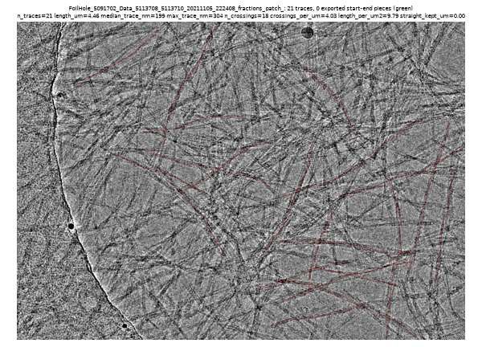
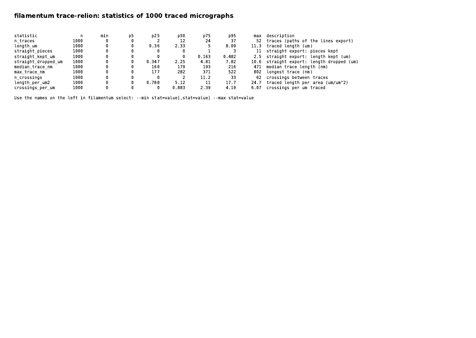
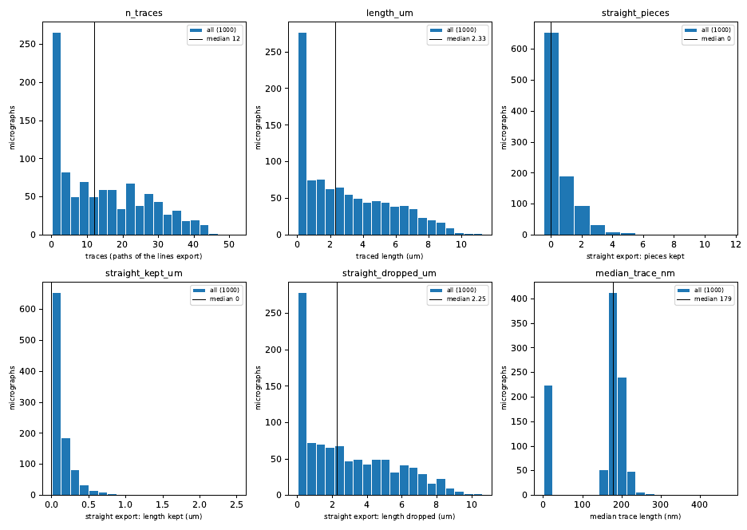
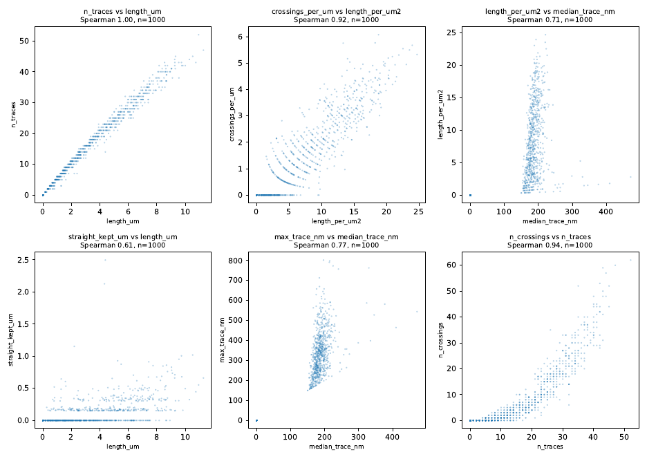
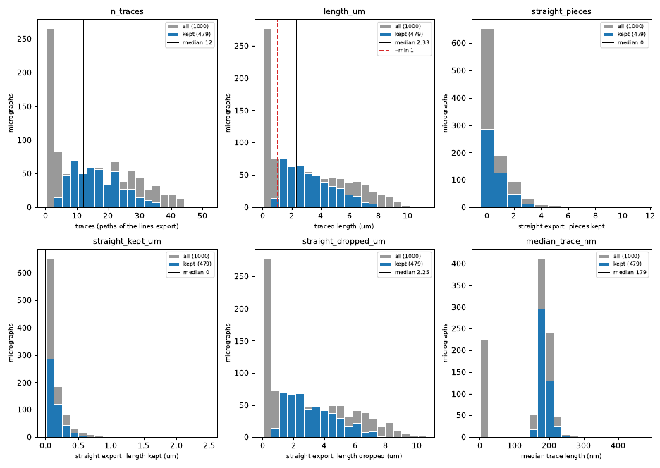
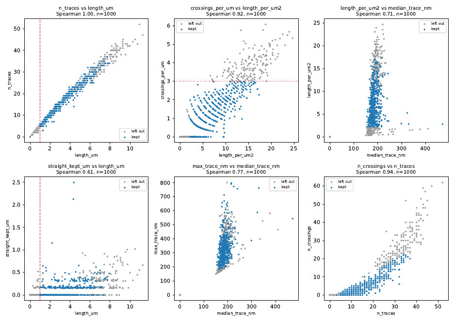
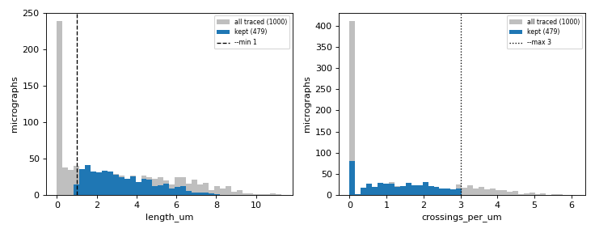

Tutorial: from manual picks to extracted segments
This walks through one data set in RELION 5.1, from a few manual picks to a micrograph selection ready for extraction. Every
filamentum step is an External job (RELION’s External job type). In the job window:
Input tab: External executable is the filamentum executable; the input STAR file goes in the matching Input … field.
Params tab: Param1 label / value, Param2 …: options that refer to other jobs, as
label= option name without the dashes andvalue= its value.Running tab: Number of threads is passed as
--j; any other option goes in Additional arguments; submit to a queue as for any GPU job.
The figures below come from a run on 1000 Aβ42 micrographs (K3, 1.39 Å/px).
1. Pick a few micrographs
Run Manual picking with Pick start-end coordinates helices? = Yes. On a few micrographs (3–10; more for difficult data), click the start and end of each filament, or of straight pieces along a curved one; consecutive pieces of one filament are merged into one filament for training. Annotate every filament on a picked micrograph that you would want traced, because unannotated filaments teach the network that they are background.
2. Fine-tune the network
New External job:
External executable |
|
Input coordinates |
|
Number of threads |
4 (processes that trace the validation micrographs) |
Submit to queue |
yes, a GPU queue (a CPU node works, about 20 times slower) |
The job fine-tunes the shipped pan network for 3000 steps. It holds out 15% of the picked micrographs (at least one) and every
250 steps (and before the first) traces them and scores the traces against your picks. The checkpoint with the best traced-length
F1 is kept as External/job006/model.pt, the job’s output node. The starting network itself is a candidate, so with very
few picks the job may keep it unchanged; run.out says which step was kept.
Useful Additional arguments: --init none (train from scratch), --iters 6000, --empty Select/job004/micrographs.star
(micrographs with no filaments, used as negatives).
3. Check the tracing on a sample
New External job:
External executable |
|
Input micrographs |
|
Param1 |
label |
Number of threads |
16, or what the node has (tracing processes) |
Additional arguments |
|
--max 100 traces the first 100 micrographs only; --qc 20 writes overlays of 20 evenly spaced micrographs to qc/ and
summary plots. Each overlay is titled with that micrograph’s statistics, the numbers filamentum select can filter on:


A QC overlay. Traces in red, exported straight pieces in green (none here: the straight export only keeps pieces that are
straight over at least --min_piece_nm). The second title line gives the micrograph’s statistics.
To compare settings, run several QC jobs on the same micrographs with different Additional arguments; each writes
qc/compare/ with this run and all earlier QC runs side by side (traced length, piece lengths, expected number of particles).
4. Trace all micrographs
The same job without --max (--qc is optional). The outputs are registered as output nodes:
relion_lines/lines.star: polylines for RELION 5.1’s curved extraction;relion_straight/startend.star: straight start-end pieces (any RELION version);logfile.pdf: the distributions of the per-micrograph statistics (below); RELION’s Display button opens it.
run.out reports progress (micrographs traced, the recent rate and the time left), then prints the statistics table.
5. Read the log file
Page 1 of logfile.pdf is the table, also in micrograph_stats.txt: the distribution of every statistic over the traced
micrographs, as percentiles. The names on the left are the ones the selection job takes.


Page 1: percentiles of each statistic over 1000 micrographs.
The next pages are one histogram per statistic, with the median as a solid line. With fewer than about 200 micrographs every value is also drawn as a tick along the bottom, and the number of bins follows the number of micrographs (about 2 n^(1/3), between 5 and 40; whole-number statistics get one bin per value when the range is small), so the histograms stay readable for 10 micrographs as well as for 10,000.


Histograms. The peak at zero in n_traces and length_um is the micrographs on which nothing was traced (here 224 of 1000).
The last page shows pairs of statistics against each other, with the Spearman rank correlation, to see which statistics carry the same information before choosing limits.


Scatter plots. n_traces and length_um are nearly the same information (Spearman 1.00); crossings per µm of traced length
rise with crowding (length_per_um2, 0.92), so a lower limit on length also selects crowded micrographs, unless it is paired
with an upper limit on crossings_per_um.
6. Select micrographs
New External job (CPU, one thread is enough):
External executable |
|
Input micrographs |
|
Param1 |
label |
Param2 |
label |
Param3 |
label |
Several limits are separated by commas, e.g. min = length_um=1,n_traces=3. A micrograph is kept if it passes every limit.
To drop only the micrographs with nothing traced, use min = n_traces=1.
The job writes micrographs.star (the kept micrographs with all columns and the optics table of the input; output node),
micrograph_stats.tsv (every micrograph, its statistics, and why it was left out), and the same log file as the tracing job, now
with the kept micrographs in colour and the limits as dashed (minimum) and dotted (maximum) lines:


Selection log file: all traced micrographs in grey, kept ones in blue, the limit as a red dashed line.


The scatter plots with kept micrographs in blue: the upper limit on crossings_per_um (dotted) removes the crowded
micrographs that the length limit alone would keep.
select_summary.png shows only the statistics that were limited:


Selection summary: 479 of 1000 micrographs kept.
7. Look at the kept micrographs
The selection job also writes the tracing job’s coordinate lists restricted to the kept micrographs (relion_lines/lines.star,
relion_straight/startend.star) and registers them as output nodes. Select one in the job’s output list and press Display:
RELION opens the manual picker on the kept micrographs, with their traces. Kept micrographs on which nothing was traced are listed
too, with no coordinates. Add the Param coords = no to leave these lists out.
8. Extract
Run Particle extraction with the selection’s micrographs.star as micrographs and the tracing job’s (or the selection job’s)
relion_lines/lines.star as coordinates, for curved segments in RELION 5.1, or relion_straight/startend.star for straight
pieces. Extraction loops over the input micrographs and looks their coordinates up, so a coordinate list may contain more
micrographs than the selection.